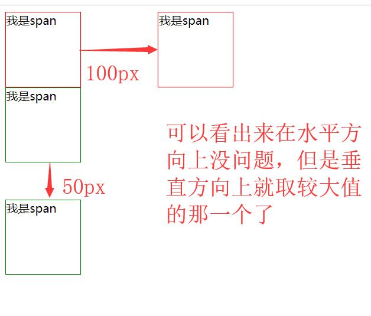
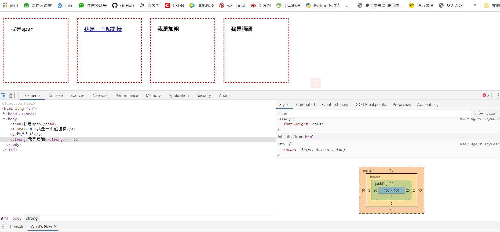

原文出处:本文由博客园博主心悦君兮君不知-睿提供。
原文连接:https://www.cnblogs.com/ruigege0000/p/11588415.html
原文连接:https://www.cnblogs.com/ruigege0000/p/11588415.html
一、 在默认布局的垂直方向上，默认情况下外边距是是不会叠加的，会出现合并现象，谁的外边距较大，就听谁的；但是在水平方向就不会出现这种状况，我们举个例子
span{
display: inline-block;
width:100px;
height:100px;
border:1px solid red;
}
div{
width:100px;
height:100px;
border:1px solid green;
}
/*我们让span的两个盒子，相距100px*/
.hezi1{
margin-right:50px
}
.hezi2{
margin-left: 50px;
}
.box1{
margin-bottom:50px;
}
.box2{
margin-top:50px;
}
..........省略代码..........
<span class="hezi1">我是span</span>
<span class="hezi2">我是span</span>
<div class="box1">我是span</div>
<div class="box2">我是span</div>
二、盒子模型
1.什么是盒子模型
答：CSS盒子模型仅仅一个比较形象地比喻，HTML中所有的标签都是盒子，我们现实生活中的物品大多都是有位置区域划分的。
注意：在HTML中所有的标签都是可以设置：宽度高度、内边距、边框、外边距
2.举例：
<style>
span,a,b,strong{
display: inline-block;
width:150px;
height:150px;
padding:20px;
border:2px dotted red;
margin:10px;
}
</style>
........省略代码..........
<span>我是span</span>
<a href="#">我是一个超链接</a>
<b>我是加粗</b>
<strong>我是强调</strong>

释义：通过谷歌开发者工具，我们可以查看，每个标签所属的区域，它们之间的数字，都是严格按照定义来的，F12下的有指导模型。
2.盒子模型的宽度和高度
（1）内容的宽度和高度：width\height设置的宽度和高度
（2）元素的宽度和高度：边框加内边距加内容的宽度和高度
（3）元素空间的宽度和高度：外边距加边框加内边距加内容的宽度和高度
三、源码：
d109_margin_merge.html
d110_box_model.html
地址:
https://github.com/ruigege66/HTML_learning/blob/master/d109_margin_merge.html
https://github.com/ruigege66/HTML_learning/blob/master/d110_box_model.html
2.CSDN：https://blog.csdn.net/weixin_44630050（心悦君兮君不知-睿）
3.博客园：https://www.cnblogs.com/ruigege0000/
4.欢迎关注微信公众号：傅里叶变换，个人账号，仅用于技术交流，后台回复“礼包”获取Java大数据学习视频礼包